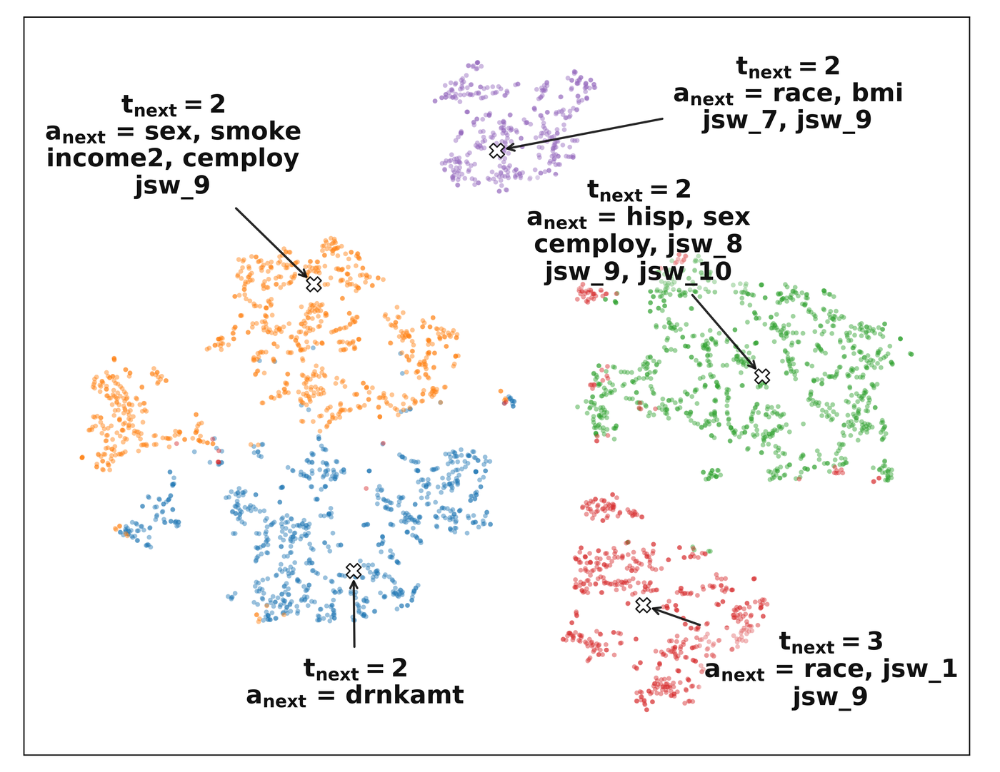
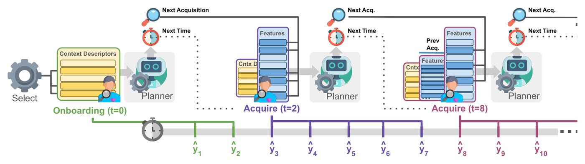
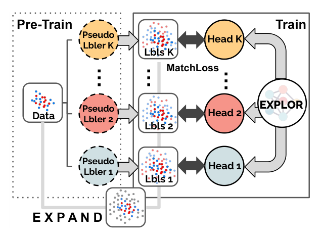
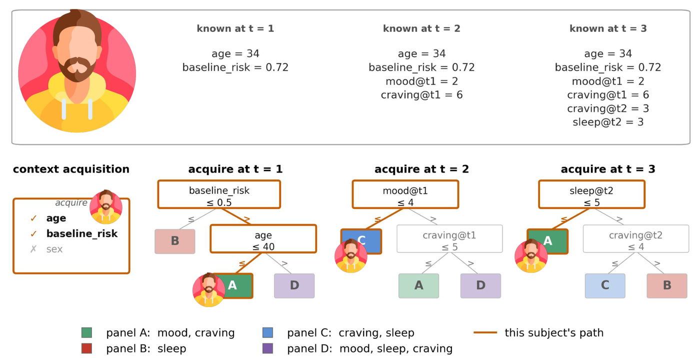
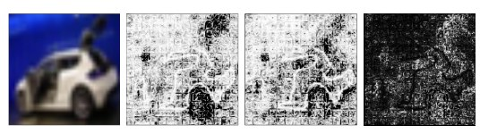
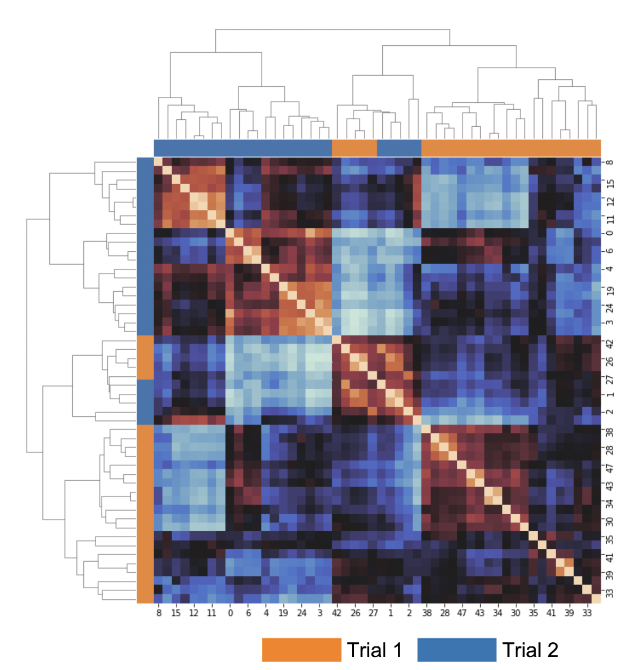

About
I am a fourth-year PhD student in the Department of Computer Science at the University of North Carolina at Chapel Hill, where I received an en-route M.S. in 2025 and expect to graduate from CS Ph.D. program in summer 2027. My tentative thesis title is Towards Inference-Time Reliability & Acquisition Utility.
My research develops machine learning methods for two problems: choosing which features to acquire over time when every measurement has a cost, and making reliable predictions on inputs unlike the training data. I apply them to healthcare prognosis, longitudinal psychological assessment, and virtual screening in drug discovery.
Before UNC, I completed an Honours B.S. in Computer Science and Data Science with High Distinction at the University of Toronto (2023), where I worked on neural-network uncertainty and medical image segmentation and classification.
Recent
- Oct 2026New preprint on interpretable longitudinal active feature acquisition via model distillation, on arXiv.
- Sep 2026CAPE accepted to the NeurIPS 2026 main track.
- May 2026Two papers, REACT and EXPLOR, accepted as long orals at ACM BCB 2026.
Research
Longitudinal active feature acquisition
In many settings every measurement has a cost: a clinical test, a questionnaire item, a follow-up visit. I develop methods that choose which features to acquire at each timepoint so that predictions stay accurate while the burden on patients and study participants falls. This includes differentiable acquisition policies for context and temporal features (REACT), nonmyopic cost-tradeoff planning (CAPE), and distilling learned policies into interpretable decision trees.
Reliable out-of-distribution prediction
In virtual screening, the most promising new chemical scaffolds are often exactly the ones a model has never seen. I work on methods that extrapolate with calibrated confidence rather than rejecting novel inputs outright, so that useful candidates are ranked rather than discarded (EXPLOR). More recently, I'm working on multi-round OOD active learning for highly imbalanced chemical datasets.
Publications
-

NeurIPS 2026, main trackCAPE plans feature acquisitions over time by scoring candidate plans with a nonmyopic objective that trades expected loss against cost, then retrieves precomputed plans at inference time from a learned embedding of partially observed data.
-

ACM BCB 2026 · long oralREACT is a differentiable framework that jointly chooses which onboarding descriptors to collect and which longitudinal measurements to take over time under cost constraints, improving prediction at lower acquisition cost on real health and behavioral data.
-

ACM BCB 2026 · long oralEXPLOR uses extrapolative pseudo-labeling on latent-space augmentations with a multi-headed network and a per-head matching loss, giving well-calibrated confidence on novel chemical scaffolds using only labeled training data.
-

Preprint, arXiv:2610.07452Selects a changing subset of questionnaire items to collect at each timepoint of a psychology study, and distills the learned acquisition policy into interpretable decision trees so that participant burden drops without losing forecasting accuracy.
-

ICPR 2022Networks trained repeatedly on the same task reach similar accuracy but can rely on very different input features; this work measures that inconsistency with feature-attribution maps and clustering analysis.
-

IEEE EMBC 2022U-Nets for medical image generation give stable output quality across training runs, yet their learned feature spaces differ substantially; this work analyzes that uncertainty with computational and clustering methods.


* equal contribution
Experience
-
Aug 2023 – presentGraduate Research Assistant, UNC Chapel Hill
Longitudinal active feature acquisition and out-of-distribution methods for healthcare, drug discovery, and clinical psychology.
-
Sep 2022 – May 2023Research Assistant, University of Toronto
Predicted the environmental impact of international conferences from attendees' flight energy use.
-
May – Aug 2022Research Intern, Princess Margaret Cancer Centre
Benchmarked the robustness of nnU-Net cervical-cancer MR segmentation models on hospital imaging data using Dice and robustness metrics. Slides
-
Aug 2021 – May 2022Research Student, Texas A&M University
Uncertainty analysis of neural networks for low-to-high-resolution medical image generation.
-
May – Aug 2021Research Assistant, University of Toronto
Analyzed and reported experimental results for medical image analysis research.
Education
- 2023 – 2027 (exp.)Ph.D. in Computer Science, UNC Chapel Hill
En-route M.S., 2025. Advisor: Junier Oliva.
- 2019 – 2023Honours B.S., Computer Science and Data Science, University of Toronto
With High Distinction.
Honors
- 2021 – 2023Dean's List Scholar, University of Toronto
- 2022Best Visualization, ASA DataFest
Teaching
-
Aug 2026Guest Lecturer, COMP 755 Machine Learning, UNC
PhD-level lectures on probability and optimization.
-
May – Jul 2025Instructor, UNC PRIMES summer program
Designed and taught a machine learning short course for a residential research program in medical imaging and Alzheimer's disease.
Reviewing
- AAAI Conference on Artificial Intelligence, 2026 and 2027
- International Conference on Learning Representations (ICLR), 2025